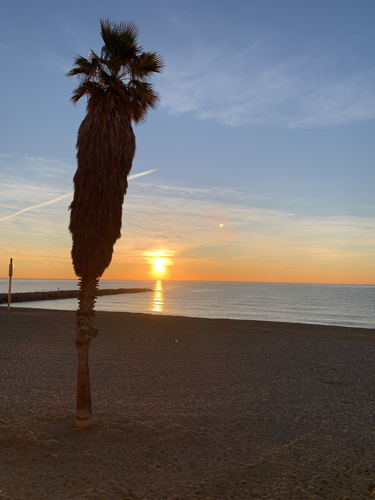
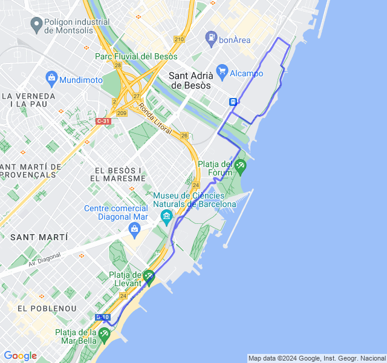
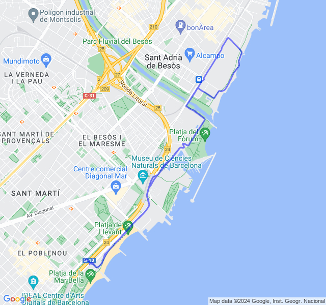
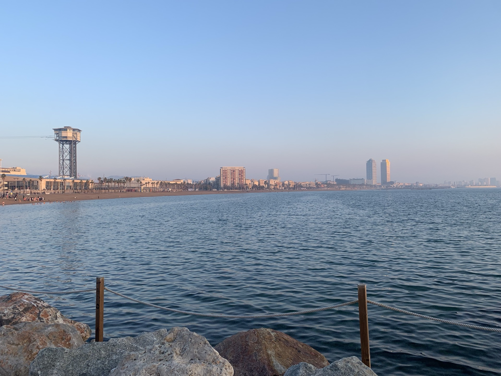
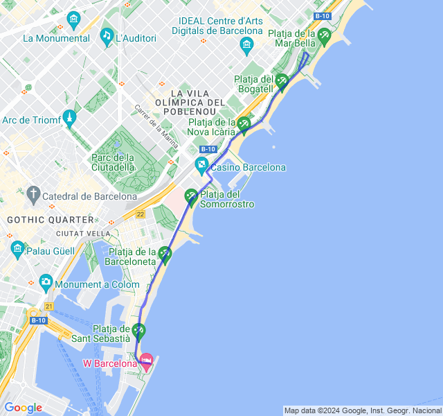
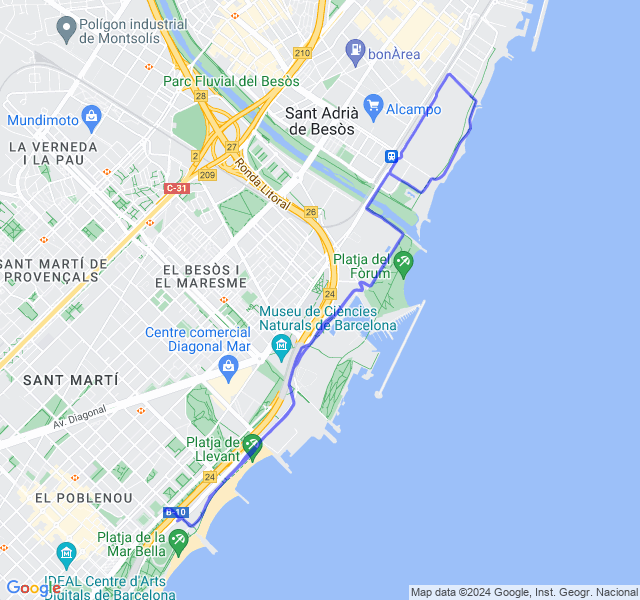
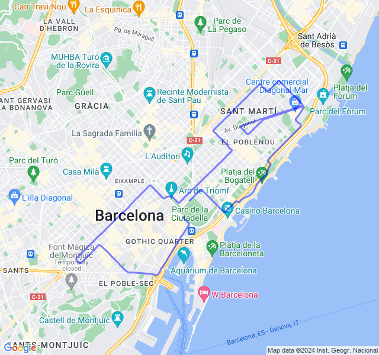

Settimana 6
Settimana di tapering pre Mezza di Barcellona!!
Prima uscita
10km Z2. Tutto tranquillo, una buona Z2 nonostante la stanchezza un po' latente degli ultimi giorni.


Seconda uscita
7x(2'Z3+1'Z2) VDOT(4:20). Tutto tranquillo, un po' troppo forti le parti in Z3 ma la fc non ne voleva sapere di salire

Terza uscita
8km Z2. Tutto tranquillo


Quarta uscita
8km Z1 + allunghi. Sembra che le sensazioni stiano tornando buone. Speriamo bene per Domenica!

Quinta uscita
🏁 Mezza maratona di Barcellona! Anche oggi, contro ogni previsione, un'ottima gara! Arrivo da giorni di stanchezza e muscoli non brillanti nonostante la settimana di scarico. Dormo pochissimo per il rumore del vento forte, esco di casa in bici e quasi non riesco ad andare dritto dalle folate. Miracolosamente durante la gara si placa un poco e il percorso è per la maggior parte abbastanza riparato. Ne esce un bel PB di un minuto su quello di un mese fa! 🥳
